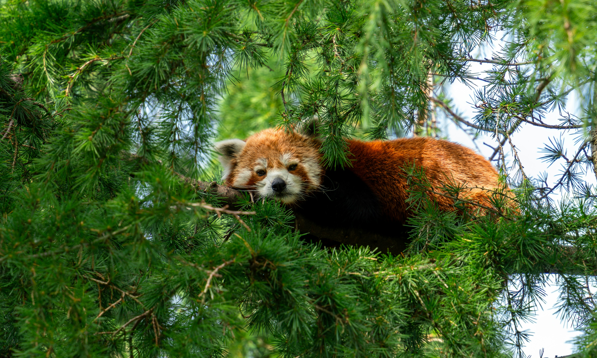

Quiénes somos

MISIÓN
Rescatamos animales silvestres heridos o en riesgo y trabajamos para rehabilitarlos y reinsertarlos en su hábitat natural mediante programas de cuidado y educación ambiental.

VISIÓN
Convertirnos en una red nacional de centros de rescate que promueva la preservación de la biodiversidad y la convivencia responsable con la fauna nativa.

VALORES
Creemos en el rol vital de cada especie en el equilibrio natural, en que la conservación comienza con la educación y que el bienestar animal es una responsabilidad compartida.